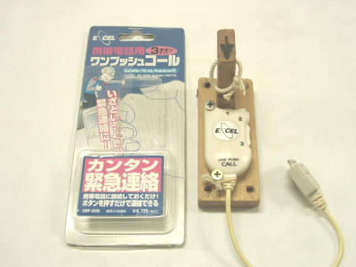

かならずお読みください→
安心をつくる
若い人は多分知らない道具
皆さんご存知のように病院のベッドにはナースコールのスイッチがついていて、これを押すと看護スタッフを呼ぶことができます。もし体調が悪くなってもすぐ知らせることができます。これで安心して過ごすことができます。特殊スイッチを使ったらナースコールが自分でできるようになり、夜も安心して眠れるようになったので睡眠薬が中止になった。こんな『風が吹けば桶屋がもうかる』ような話も当院にあります。安心ってこんなふうに作ることができます。
退院して自宅での生活が始まってもこれは同じです。健康に不安があればなおさらです。こんなときもしなにかあっても家族や誰かをすぐ呼べるならば安心して過ごすことができます。
今では家庭用コールはホームセンターなどで購入できます。当院では不自由がある方用の特殊スイッチやナースコールスイッチを提供している関係で、外部スイッチを接続できるホームコールとして、パナソニックのワイヤレスコール（下写真）を用意しています。これらの製品は比較的高価ですが、多様な機能と手にとって実際に使ってみると長期間使用できる丈夫さと故障の少ない信頼性があり、これを考慮すれば妥当な価格と思われます。
パナソニック ワイヤレスコール 上は送信機 下は受信機
ご希望があれば退院間近の外泊の際などにこれらを貸し出してご家族にもホームコールのある生活を試していただく機会を提供しています。ご本人は入院中にコールを体験されていますが、ご家族もコールのある離れていても通じる生活を体験してしていただければ、退院後の生活について気持ちの準備にも役に立つことができることでしょう。
（患者さんが）鳴らしたコールの『ピンポーン』の音が、家のどこでもとても良く聞こえたのでそれまでの心配がすーっと軽くなりました。患者さんのご家族には念入りな説明よりも現場での実演が説得力を発揮するようです。
ホームコールを利用するとご家族の負担はかなり軽減され、安心感もかなり向上します。音が聞こえたらすぐそばに駆けつけられますので、その間安心してほかのことに専念できます。
しかし例えば、近所まで夕食の買い物にでかけたいけれど、その間ひとりで家に残して行ってもいいだろうかという問題が出てきます。外出するとコールの音は聞こえませんし、離れていると駆けつけるにもいくらか時間がかかります。
介護は大事ですが、家族の生活も同じくらい大切です。また精神的な負担が大きいと長続きしなくなりますので十分な配慮が必要でしょう。 もし普段から病状が安定していて、しばらくは問題なさそうならいいかもしれません。でも心配といえばやはり心配、そのような場合のためにいろいろな道具や方法がすでに考えられています。
NTTのふれあいホンあんしんｓｖは、押しボタンで自動的に指定の番号に電話をかけ、録音メッセージ（緊急事態発生）を送信する道具です。また神経難病の方がよく使用している、コミュニケーションエイド伝の心を使い空メールを送って帰宅を促す連絡にしている事例もあります。
NTT ふれあいホンあんしんｓｖ 右下は送信機 左上は受信機
以前はこのような特殊な道具や方法でないと外出中の家族に連絡することは簡単ではなかったのですが、携帯電話やスマホがこれだけ発達し普及して多くの方がお持ちですので、これらを活用できると問題解決の可能性が大きくなるでしょう。
もし患者さんが自分で外出中の家族に電話できるとこの問題は随分楽になります。会話が苦手でも電話番号が相手に表示されますのでわかります、帰宅にはやや時間はかかりますがこれでホームコールと同じ役目が果たせます。
もし固定電話に子機があれば相手の番号をワンタッチダイヤルに登録して、ベッドの中から容易に通話できるようになるかもしれません。
スマホを使っても電話はできます。スマホなら初心者、こども、高齢者向けのかんたん操作アプリも色々ありますので助けになるかもしれません。 スマホ画面を軽くタッチできるなら、前回説明した方法を使えば電話がかけられます。不自由のある人がスマホをタッチする方法や道具はそれぞれたくさんあります。 すでにスマホをお持ちなら費用も時間も余分にかからず結構なことです。
このようにイマドキ身の回りにはいろいろハイテクがあります。まずはいまあるものを活用して、安心できるかを試してみるところからはじめてみましょう。もしうまくいけば時間やおかねの節約にもなります。すでにあるスマホも有効活用できます。
もしスマホをお持ちでなくても、今ではスマホを持っている人はたくさんいますので、どなたかのをちょっと借りてできるかどうか試してみることはとてもかんたんです。まずはためして、その後でどうするか考えてもいいでしょう。
そのむかし、エクセルエンジニアリングという会社さんがワンプッシュコールという製品を販売していました。（このページトップの画像）ふたつおれ携帯（俗に言うガラケー）に接続し、ボタンを押すと携帯電話のメモリに記録してある番号に電話をかけることができました。
あるとき、一人暮らしの車いすユーザの方から困ったときの緊急呼び出しについて相談があり、このワンプッシュコールを試してもらいました。ある日、在宅支援サービスに電話が入りましたが会話がありません。しかし周囲の物音や様子から元気そうだが助けは必要らしいと判断して見に行くと、何かに手を伸ばして座位姿勢が崩れ立て直せずに困っていたそうです。知っている人なら電話から聞こえる物音だけでも色々わかるようです。ワンプッシュコールはシンプルで随分役に立つ道具でしたが販売はその後止まってしまいました。
その当時から、不自由のある人にとって携帯電話は必需品でした。それがいまではスマホに置き換わりますます普及しています。これらをそれぞれのいろいろな目的のためにうまく活用できるようになれば、不安を減らし安心をふやすことができるようになるでしょう。
また福祉の窓口で予算がどうしたともめたり、申請書類つくりで人手が取られたり、散々時間をかけたのに結局がっかりしたりすることも少なくなると思います。何よりも今どき話題の『生産性向上』にかなり寄与できると思うのですがいかがでしょうか。
2022/09/16 公開
研究企画課リハ工学科にもどる
←もくじはこちらです